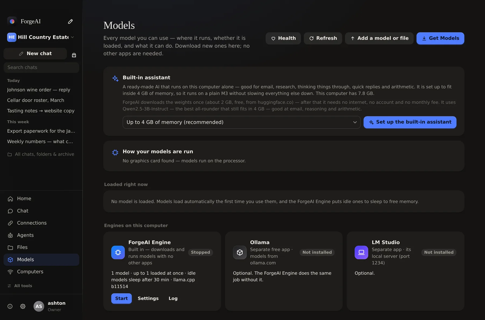
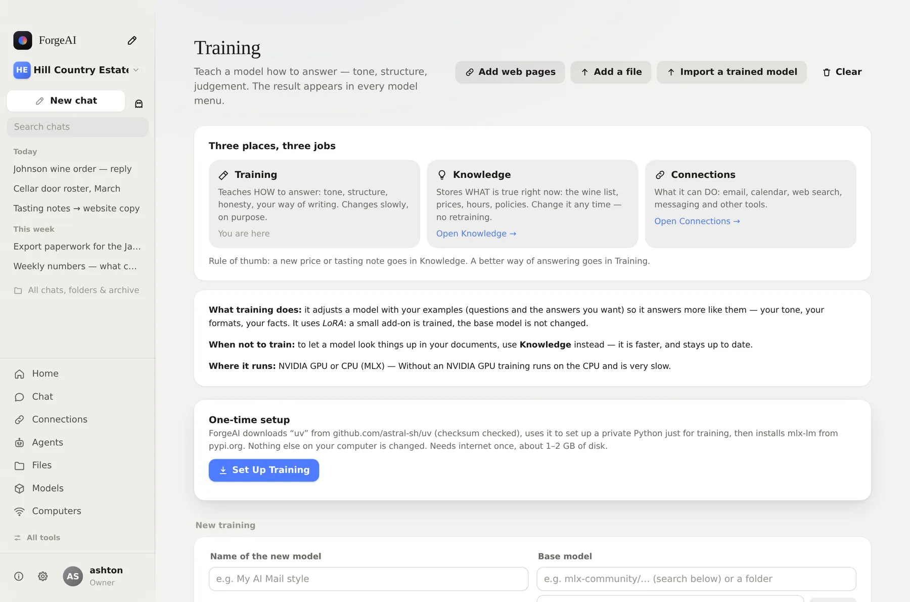

Step one
You write down how you answer.
A question, and the reply you would actually send. Thirty or forty of them is plenty — and you only write each one once.
ForgeAI downloads open models straight from Hugging Face — no Ollama, no Python, no terminal. Then, on an Apple Silicon Mac, it can train one on your own examples until it answers the way you would.
A question, and the reply you would actually send. Thirty or forty of them is plenty — and you only write each one once.
A few hundred steps on your own machine. The line falling is the model getting less wrong about how you write.
Training produces an adapter of a few megabytes. The base model is untouched, so you can take the adapter off, keep several, or train again from where you stopped.
Your prices, your sign-off, your rules about what never to quote. It appears in every model menu like any other.
The examples, the training and the finished adapter all stayed on your computer. No one else got a copy of how your business talks.
Pick the group that matches your memory. ForgeAI checks your machine and tells you which ones will run well, which will be tight, and which are too big — before you download anything.
Tiny and very quick. Great for short answers on any Mac.
Fast, surprisingly smart, uses tools.
Quick, and can look at images.
Best all-rounder for 16 GB. Good at email and tools.
Reliable general model, natural writing.
Thinks step by step before answering.
Excellent writing; reads images.
Powerful, strong with tools and agents.
Strong at maths and logic.
Deeper step-by-step reasoning.
Writes and fixes code.
OpenAI’s open model. Reasoning and tools.
Polished writing, follows instructions well.
Google’s largest open model. Great writer.
Big-model quality at small-model speed.
Fast, strong coding agent model.
Very capable. Needs a 48–64 GB Mac.
Top local reasoning for big Macs.
Near top-tier quality. 64 GB+ only.
Largest open OpenAI model. 96 GB+ only.
Download sizes are for the 4-bit versions ForgeAI picks by default. “Memory” is what the computer should have for the model to run comfortably alongside everything else. All of these are free and open — you are downloading them from Hugging Face, not buying them.

ForgeAI fetches the weights, picks a quantisation that fits your memory, and starts the engine itself. There is no separate app to install.
Leave it on Auto and it chooses the quickest model that can actually do the job — then tells you which it used and why.
Anything unused is unloaded after a while so your memory comes back. The next question wakes it again.
An NVIDIA card is detected and as many layers as fit are pushed onto it. Apple Silicon uses the whole machine.
Already have a .gguf, a Hugging Face folder or a MLX model? Drop it in. It appears beside the rest and loads on demand.
Paste a key and the hard questions can go there instead, with the running cost shown. Your key sits in the vault, not in a config file.
It does not teach a model new facts the way a textbook would. It teaches it how you answer — your tone, your formats, your rules — so you stop re-explaining yourself in every prompt.
“Always quote the trade list, never retail.” “Sign off as Ashton.” “Keep it under 120 words.” “Never promise a delivery date without checking.” After training you stop having to say any of it.
Prices, stock, this week's roster — those belong in Knowledge and Files, where the model reads them fresh each time. Training them in just bakes in something that will be wrong next month.
Pairs of “what was asked” and “what you would reply”. ForgeAI can pull candidates out of chats you have already had, or you can paste them in, upload a .jsonl or a spreadsheet, or point it at pages on your own website.
A couple of hundred steps on an Apple Silicon Mac takes minutes, not hours. It is free, it happens locally, and you can stop it and carry on later from the same point.
A file of a few megabytes that clips onto the base model. Duplicate it, edit the examples and retrain, keep one per brand or per person — and move it to another computer by copying it across.

The first one downloads while you are still setting up.